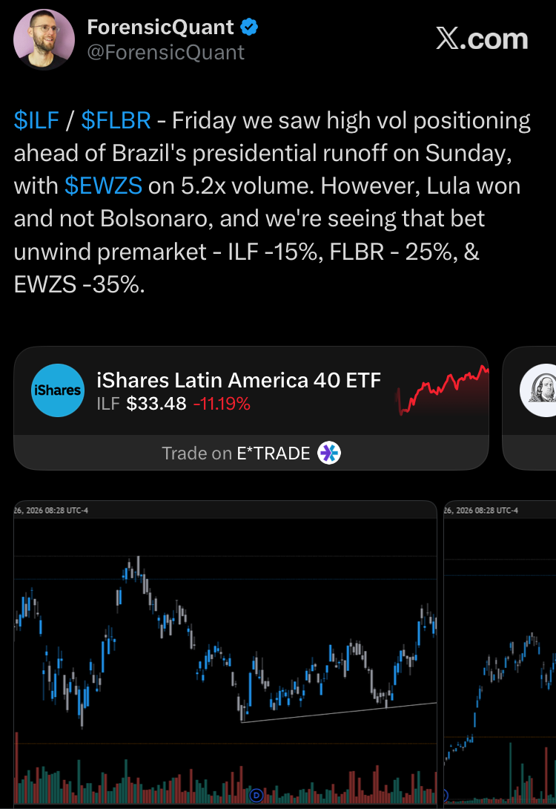

- EWZ: opened −25.5% ($31.71), premarket low −30.7% ($29.53 at 4:14 a.m. ET), closed −19.8% ($34.15)
- Records, in Polygon.io data back to September 2003: largest EWZ opening gap; second-worst close (after March 16, 2020); most shares traded in a day (299.2 million)
- Other Brazil funds at the close: EWZS (small caps) −31.6%; FLBR −19.9%; ILF (Latin America 40) −11.2%; BRZU (2x) −39.4%
- Ibovespa (B3): −13.88% to 176,608.23, after a 30-minute circuit-breaker halt at the open
- Brazilian real: USD/BRL 4.99 → 5.40, 4:00 p.m. to 4:00 p.m. ET (+8.3%); real −7.7% against the dollar
- Neighbors: USD/MXN −0.6%, USD/CLP −0.5%, USD/COP −0.2%; EWW +0.1%, ECH −1.2%, EPU +0.2%
- U.S.-listed Brazil stocks: XP −48.4%, Bradesco −28.0%, StoneCo −27.4%, Itaú −20.4%, Nu −17.0%, Petrobras −14.0%, Vale −3.2%, Suzano +2.1%
Three Weeks After a Bolsonaro Lead
Monday’s selloff reversed a rally that began after the first round. On October 4, Flávio Bolsonaro of the Liberal Party finished ahead of Lula, about 47% to 45%, according to Al Jazeera. Brazilian assets jumped the next day. On Monday, October 5, EWZ rose 12.5%, EWZS 14.8%, Itaú 15.5% and XP 30.9%, and USD/BRL fell from 5.22 to 5.00 at 4:00 p.m. Eastern, a gain of about 4% for the real. Over the next three weeks, local bond yields fell too: the yield on the fixed-rate Tesouro Prefixado 2032 went from 14.15% at the open on October 2 to 12.89% at the close on October 23, according to InfoMoney. Stocks did not keep climbing, though. EWZ peaked at $43.54 on October 9 and drifted lower into the vote.
Betting markets favored Bolsonaro more strongly than the polls did. A Polymarket chart shared by a right-wing influencer gave him about a 63% chance before the first round, and his odds stood at 77% on October 17, AFP reported. Brazil banned these platforms domestically in April. The final polls were closer. In the week before the vote, AtlasIntel/Bloomberg had Bolsonaro ahead 49.8% to 47.6%, Nexus 46.5% to 45.9% and Quaest 45% to 44%, and Al Jazeera described the race as within the margin of error. A Citi survey of 73 fund managers found that 80% expected Brazilian stocks to fall more than 5% if Lula won. “Markets were broadly positioned for a Bolsonaro victory,” Eirini Tsekeridou of Julius Baer said, according to MercoPress.
The campaign pitted two different fiscal stories against each other. Bolsonaro campaigned on a tougher line on crime and on reining in inflation and government spending, including a debt ceiling, Al Jazeera reported; he also promised to restore tax cuts for the events sector. Lula ran on his record on jobs and poverty and on proposals including a shorter work week and free weekend public transport. The backdrop is a heavy debt load. Brazil’s gross debt is forecast at about 83% of GDP this year, up 12 percentage points during Lula’s current term, and real interest rates are above 8%, Americas Quarterly reported. Its editor, Brian Winter, estimated more than $60 billion of extra spending, welfare payments and debt forgiveness before the election. Lula will also face a Congress in which the opposition Liberal Party holds 23.6% of the lower house and 34.6% of the Senate, according to Alessandra Ribeiro of Tendências Consultoria, writing in the same piece.
Election Night and Monday Morning
Lula won by about 4.4 million votes. He is the first Brazilian elected president four times, and the first candidate to win a runoff after trailing in the first round. During voting on Sunday, Supreme Court Justice Cristiano Zanin extended polling hours nationwide by two hours at the request of Lula’s campaign, after complaints that some voters could not reach polling stations. Bolsonaro called the extension a “dirty trick.” “It is impossible to recognise the results. I am going to request the annulment of these elections,” he said in Brasília, the Buenos Aires Times reported. UBS told clients the request was unlikely to succeed, because Bolsonaro’s own campaign had sought extended voting in at least three states, HNGN reported. Centrist party leaders in Congress and right-leaning leaders in the region, including Chile’s José Antonio Kast, accepted the result, according to Americas Quarterly. In his victory speech in São Paulo, Lula said, “I owe this victory to the rebellious youth who rose up to defend democracy,” and promised to rein in big tech. Winter wrote that markets may keep falling until Lula details plans to cut spending.
The stress showed up in Brazil’s bond market as well as in stocks and the currency. The January 2027 interest-rate futures contract hit B3’s daily limit at 14.288%, and the January 2031 contract traded above 15.25% by mid-afternoon, UOL reported. Brazil’s Treasury cancelled this week’s auctions of inflation-linked and fixed-rate bonds, keeping only its sale of floating-rate bonds tied to the Selic policy rate, InfoMoney reported. It also bought back about R$7.1 billion of government bonds, including fixed-rate bonds, according to UOL. Citi told clients the main concerns about a fourth Lula term were fiscal policy, state-owned companies and the reform agenda, HNGN reported. “Investors need a revised fiscal framework that generates primary surpluses sufficient to stabilise debt,” Viktor Szabó of Aberdeen Investments said, according to MercoPress.
Measured from before the first round, EWZ closed 10.6% lower, XP 26.9% lower, Itaú 10.4% lower and EWZS 16.4% lower. The real ended about 3.5% weaker than on October 2, on 4:00 p.m. Eastern quotes. Broad emerging markets also fell over those three weeks: EEM was down 8.6%. So most of EWZ’s net decline since October 2 matches the wider asset class, while Brazil’s domestic financials and small caps fell much further. Price data alone can’t say whether Monday also reflected a higher estimate of fiscal risk.
Friday Leaned the Other Way
Brazil went into the weekend bid while the rest of the market did not. On Friday, October 23, SPY fell 0.5% and the iShares MSCI Emerging Markets ETF (EEM) rose 0.5%. EWZ rose 1.8% on about 1.6 times its average volume over the prior 20 sessions. The small-cap fund EWZS rose 3.4% on 9.3 million shares, about four times its prior 20-session average, after a 6.7% gain on the week. Domestic names led: XP rose 3.6%, Nu Holdings 2.9% and Itaú 1.9%.
That fits a market still leaning toward a Bolsonaro win into the final session. The strongest buying was in domestic small caps, and Brazil outperformed on a down day for U.S. stocks. But price and volume cannot show what investors actually held, and we had no flow or options data. Monday’s prices probably reflected several risks at once: fiscal expectations, the challenge to the result, interest rates, the currency and thin liquidity. They are not a measured verdict on either candidate.
The Gap Came Before the Open
Our first observed premarket print for EWZ, at 4:00 a.m. Eastern, was $34.58, down 18.8% from Friday’s $42.59 close. That was five hours before B3’s cash-equity session, which opens at 10:00 a.m. Brasília time, or 9:00 a.m. Eastern on this date. Within fifteen minutes EWZ hit its low of the day, $29.53 at 4:14 a.m., down 30.7%. It then spent most of the premarket session between about $30.50 and $32. More than 40 million EWZ shares traded before the bell, almost half of Friday’s full-session volume.
When São Paulo opened, B3 triggered a circuit breaker. It halted cash equities, equity options and ETFs for 30 minutes and reopened them in an auction from 10:30 to 10:35 a.m. Brasília time, which is 9:30 to 9:35 a.m. Eastern. That window coincided with the U.S. open. EWZ opened at $31.71, 25.5% below Friday’s close and the largest opening gap in EWZ data back to 2003. The previous record was −17.8%, on May 18, 2017; the worst gap of March 2020 was −16.3%. EWZ’s regular-session low, $31.40, came at 9:32 a.m., during B3’s reopening auction. From there it rose for most of the day, reaching $34.54 at 3:33 p.m. and closing at $34.15.
The other Brazil funds followed the same path. FLBR, Nu, StoneCo, ILF and the leveraged BRZU all bottomed in the first minutes of the regular session and closed in the top fifth of their regular-session ranges:
EWZ recovered about 22% of its opening dollar gap by the close and finished 15.6% above its premarket low. That is consistent with an initial liquidity or positioning effect, which would fit a premarket in which no local market was trading against EWZ until B3 reopened at 9:35 a.m. But prices alone cannot distinguish that from short covering, news during the day or a change in how investors assessed the risks. The rebound tells us what happened, not why, and it is not a judgment on whether the repricing was right.
The Currency: Brazil Was the Outlier
U.S.-listed Brazil funds are priced in dollars, so an unhedged fund carries the real’s move on top of the stocks’ move. USD/BRL was 4.99 at 4:00 p.m. Eastern on Friday and 5.40 at 4:00 p.m. on Monday, up 8.3%, which means the real lost 7.7% of its dollar value. B3’s own session recap put the commercial dollar’s close at R$5.40, up 8.25%. The indicative quotes we used printed as high as 5.4653 in late morning, but that came during a stretch when the feed looked stale (see below), so we don’t treat it as a market high.
| Pair | Change | Fri 4pm | Mon 4pm |
|---|---|---|---|
| USD/BRL | +8.3% | 4.9898 | 5.4037 |
| EUR/BRL | +8.2% | 5.5835 | 6.0402 |
| GBP/BRL | +8.1% | 6.6721 | 7.2113 |
| BRL/JPY | −7.2% | 31.41 | 29.14 |
| USD/MXN | −0.6% | 18.654 | 18.547 |
| USD/CLP | −0.5% | 994.9 | 989.8 |
| USD/COP | −0.2% | 3,153.9 | 3,146.6 |
| USD/ARS | +0.7% | 1,529.2 | 1,540.3 |
| USD/ZAR | +0.3% | 16.588 | 16.637 |
| EUR/USD | −0.1% | 1.1194 | 1.1177 |
The euro, pound and yen crosses add no new information. With the dollar roughly unchanged against those currencies, every real cross moved about as much as USD/BRL; that is arithmetic. The useful rows are the neighbors. The Mexican peso was modestly firmer against the dollar, and the Chilean and Colombian pesos were slightly firmer. The Argentine peso and the South African rand, a common gauge of broad emerging-market risk, each moved less than 1%. We left out the Peruvian sol, whose quotes were too sparse to give a reliable close.
The country stock funds point the same way. Mexico’s EWW rose 0.1%, Peru’s EPU rose 0.2%, Chile’s ECH fell 1.2% and the broad emerging-markets fund EEM fell 0.3%. ILF’s 11.2% decline fits a fund whose largest country exposure is Brazil, about 59% according to iShares. The regional exception was Argentina’s ARGT, down 4.9%. We have not established why, and it may have nothing to do with Brazil. Among the markets we tracked, Brazil was the clear outlier.
One caution on timing. Our USD/BRL feed is an indicative quote, not a traded price. It sat near Friday’s level through the premarket session and the U.S. open on only a handful of ticks a minute. It then jumped about 6% around 10:50 a.m. and alternated between two levels for half an hour. That looks like a stale quote catching up, not continuous price discovery. We use only the closing levels, and we can’t say how the premarket ETF price split between stocks and the currency.
At the close, a rough split is possible. Translating EWZ’s close-to-close dollar return into reais at the Friday and Monday 4:00 p.m. quotes implies a decline of about 13.2%. On a log basis, currency translation accounts for about 36% of the dollar loss, roughly a third. That is an estimate on EWZ’s market price, not a measured local-market return, and it can include any gap between EWZ’s price and the value of its holdings. For comparison, B3 reported the Ibovespa down 13.88%, though the Ibovespa and EWZ’s MSCI portfolio are different baskets. For individual companies, the economic currency exposure depends on the business: Suzano, which sells largely in dollars, rose.
Who Fell, and Who Didn’t
The U.S.-listed Brazil shares and ADRs we tracked split broadly by exposure. Several banks, brokers and payment companies fell much more than the exporters. The split was not clean, as the chart shows.
Financials. XP was the largest decliner in this group, down 48.4% after trading 52% lower before the open. Bradesco fell 28.0%, StoneCo 27.4%, PagSeguro 25.2%, Itaú 20.4% and Nu 17.0%. One plausible reading is that these businesses are especially sensitive to the outlook for credit quality and fiscal credibility, and to the discount rate investors apply to Brazilian earnings. A higher policy rate alone would not explain the move, since it often helps large banks’ lending margins. We have not tested that reading. XP’s fall was more than double Itaú’s and may include company-specific factors we have not checked.
Utilities, energy and consumer names were mixed. The water utility Sabesp fell 26.1%, more than several of the financials. The power utility Cemig fell 17.0%. Petrobras and Ambev each fell about 14%, and the telecom ADRs TIM and Telefônica Brasil each fell about 12%. Press coverage of Petrobras cited concerns about fuel pricing and dividend policy.
Exporters held up. Pulp producer Suzano rose 2.1%. Vale fell 3.2%, a move that coverage also tied to a UBS price-target cut. Gerdau fell 6.9%. Companies that sell in dollars but pay many of their costs in reais tend to hold their dollar value better when the real falls. The two largest non-financial declines did not fit the pattern: Braskem fell 35.3% and Azul 32.6%. We have not examined their company-specific drivers, so we show them separately rather than force them into a group.
What We Can’t Tell Yet
This note is built from one session of U.S. trading data, B3’s published close and halt notice, and press coverage. We did not have intraday B3 prices, offshore real forwards, closing levels for Brazilian interest-rate futures, sovereign credit default swaps or fund flows. Each of those would test the account above better than U.S.-listed prices can. The real’s move has had only one session to settle, and the thin quotes around it make the intraday path less certain than the closing level. Lula had not named a finance minister or set out fiscal plans when this note was written, and Bolsonaro’s request to annul the result was unresolved.
What to Watch
Three policy events come first: Lula’s choice of finance minister and any fiscal plan that comes with it, the courts’ handling of Bolsonaro’s annulment request, and whether the Treasury resumes its fixed-rate bond auctions next week. In the market data, watch two things. First, whether the real stabilizes, measured by a named benchmark such as B3’s commercial-dollar close (R$5.40 on Monday). Second, whether the gap between exporters (Suzano, Vale) and domestic financials (XP, Itaú) narrows or widens. A narrowing gap alongside a steadier real would be consistent with Monday’s move being partly a positioning or liquidity effect. A widening gap alongside a weaker real would suggest the market is still repricing Brazil’s domestic outlook. Brazilian interest-rate futures and five-year sovereign credit default swaps would answer the question more directly.
Frequently Asked Questions
Why did Brazilian markets fall after Lula won?
Brazilian assets rallied after Flávio Bolsonaro led the October 4 first round about 47% to 45%. Most final polls showed him slightly ahead, Polymarket put his chances at 77% in mid-October, and Bolsonaro had campaigned on reining in government spending. Lula won 51.79% to 48.21%, and analysts cited concerns about fiscal policy, with gross debt forecast near 83% of GDP. A key interest-rate futures contract hit B3’s daily limit, and the Treasury cancelled its fixed-rate and inflation-linked bond auctions for the week.
How much did Brazilian stocks fall after the October 2026 runoff?
On Monday, October 26, 2026, the iShares MSCI Brazil ETF (EWZ) opened 25.5% below Friday’s close and closed down 19.8% on 299 million shares. The small-cap fund EWZS fell 31.6%, and B3 reported the Ibovespa down 13.88% after a circuit-breaker halt at the open. In Polygon.io data back to September 2003, it was EWZ’s largest opening gap and its second-worst daily close, after March 16, 2020.
How much did the Brazilian real fall?
USD/BRL rose from 4.99 at 4:00 p.m. Eastern on Friday to 5.40 at 4:00 p.m. on Monday, a rise of 8.3%, meaning the real lost about 7.7% of its dollar value. B3 reported the commercial dollar closing at R$5.40, up 8.25%.
How much of EWZ’s loss was the currency?
Roughly a third, as a closing estimate. Translating EWZ’s 19.8% dollar loss into reais at the Friday and Monday 4:00 p.m. quotes implies a decline of about 13.2%, so currency translation accounts for about 36% of the dollar loss on a log basis. The estimate uses EWZ’s market price, not a measured local-market return, and says nothing about how the opening gap split between stocks and the currency.
Did other Latin American markets fall with Brazil?
Much less. The Mexican, Chilean and Colombian pesos ended slightly firmer against the dollar, and the Mexico (EWW), Chile (ECH) and Peru (EPU) country ETFs moved between −1.2% and +0.2%. Argentina’s ARGT fell 4.9%, a move this note does not explain. Among the markets tracked, Brazil was the clear outlier.
Which Brazilian stocks fell the most and the least?
Among the U.S.-listed Brazil shares and ADRs tracked, XP fell most (−48.4%), followed by Braskem (−35.3%) and Azul (−32.6%). Several banks and payment companies fell much more than exporters: Bradesco −28.0%, StoneCo −27.4%, PagSeguro −25.2%, Itaú −20.4% and Nu −17.0%. Exporters held up: Vale fell 3.2% and Suzano rose 2.1%.
Why did BRZU fall only about 39%?
BRZU, the Direxion Daily MSCI Brazil Bull 2X fund, targets twice the daily return of the MSCI Brazil 25/50 Index, not three times; its 3x objective ended in 2020. It fell 39.4% at the close and 51.1% in the premarket.
Prices, volumes, premarket prints and currency quotes are from Polygon.io data for October 23 and 26, 2026. Currency levels are indicative quotes, not executable rates; the currency decomposition uses the latest minute close at or before 4:00 p.m. ET on both days. Record and ranking claims cover EWZ data from September 2003; the fund launched in 2000. Vote totals are from Brazil’s Superior Electoral Court (TSE). The Ibovespa close, the circuit breaker and the commercial-dollar close are from B3. BRZU’s leverage is from Direxion and ILF’s country exposure from iShares (as of October 23). Company context is from press coverage published October 23–26, 2026 (Motley Fool and Zacks, via Polygon.io). Election, polling, fiscal and bond-market context is from AFP and the Buenos Aires Times, Al Jazeera, Americas Quarterly, MercoPress, InfoMoney, UOL and HNGN, as linked; Polymarket odds are from AFP reporting, not our own data. Views are as of October 26, 2026 and may change without notice. Light Water Capital and its clients may hold positions in securities discussed. This note is not investment advice or a recommendation to buy or sell any security.
Brazil, from the commodity side
Brazil’s cane mills sit at the center of this year’s sugar rally. We broke down the oil, weather and positioning behind it.
Read the sugar note